<!DOCTYPE html>
<html lang="en">
<head>
    <meta charset="UTF-8">
    <meta name="viewport" content="width=device-width, initial-scale=1.0">
    <title>Dynamic Hand-Drawn Shapes</title>
    <style>
        /* 1. Setup the "Canvas" */
        body, html {
            margin: 0;
            padding: 0;
            width: 100%;
            height: 100%;
            background-color: #003366; /* Your monochrome blue background */
            overflow: hidden; /* Prevents scrollbars if shapes move off-screen */
        }

        /* 2. The Shape Container */
		.shape {
			/* The "Physical" properties */
			position: absolute;
			width: 300px;
			height: 300px;
			
			/* The "Stenciling" instructions (but no image yet!) */
			-webkit-mask-size: contain;
			mask-size: contain;
			-webkit-mask-repeat: no-repeat;
			mask-repeat: no-repeat;
			
			/* The default "Paint" color */
			background-color: white; 
		}

		.doodle-1 {
			-webkit-mask-image: url('assets/doodle/doodle1.png');
			mask-image: url('assets/doodle/doodle1.png');
			/* Set initial position here */
				left: 500px;
				top: 300px;
		}

        /* 3. A quick animation for the color loop */
        .loop-color {
            animation: colorShift 5s infinite alternate ease-in-out, 
			
        }

        @keyframes colorShift {
            0%   { background-color: #ff5555; } /* Soft Red */
            50%  { background-color: #55ff55; } /* Neon Green */
            100% { background-color: #ffff55; } /* Bright Yellow */
        }
    </style>
</head>
<body>
<!-- 
    <div class="shape loop-color" id="shape1" style="top: 100px; left: 100px;"></div>
     -->
    <!-- <div class="shape" id="shape2" style="top: 250px; left: 400px; background-color: cyan; opacity: 0.8;"></div> -->

	<div>
		<div id="test2" class="shape doodle-1" style="background-color: red; left: 400px;"></div>	
	</div>


	<div>
		<div id="test1" class="shape doodle-1 loop-color"></div>	
	</div>
	<!-- <div>
		
	</div> -->
    <script>
        // Simple script to make 'shape1' follow your mouse
        const shape = document.getElementById('shape1');

        window.addEventListener('mousemove', (e) => {
            // Centers the shape on the mouse
            const x = e.clientX - 150; 
            const y = e.clientY - 150;
            shape.style.transform = `translate(${x}px, ${y}px)`;
        });
    </script>

</body>
</html>